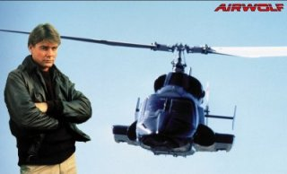

|
Where Are They Now? |
| Number Seventeen - Airwolf |
|  |
The late seventies and early eighties were great times for the
discerning action-adventure TV series. We had some real classics, such
as Buck Rogers, and Battlestar Galactica, The A-Team, and, of course,
Airwolf.
Airwolf was a step beyond other action series, in that the plots were consistently aimed at a more mature viewer. Unlike The A-Team, where men sprayed bullets all over the place without even the slightest chance of anyone actually getting shot, some of Airwolf's episodes had bodycounts to rival an Arnie film. The helicopter's guns did what you'd expect them to do; mow down whole armies of men within a few seconds. People died in Airwolf, lending the show a more realistic edge than its contemporaries. Of course, this wasn't enough, and Airwolf finally succumbed to the pressures of ratings (amongst other things). There was a half-hearted attempt to revive the series with an all-new cast (including Barry Van Dyke, would you believe) and a believability of zero. No more Archangel, no more Stringfellow Hawke, and no more complex and intriguing plots. There wasn't even any new helicopter footage (it was all chopped together from the earlier series). Absolute crap. Still, maybe someone'll make a movie version, eh? |
Back to Pssst!